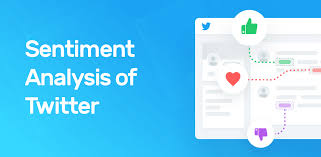

Twitter Sentiment Analysis project, we analyze tweets to
determine the sentiment or emotions expressed by users, typically
categorized as positive, negative, or neutral. This involves collecting
tweet data using Twitter's API, preprocessing the text by removing noise
like hashtags, mentions, and URLs, and then using Natural Language Processing
(NLP) techniques to analyze the sentiment. Machine learning models such as
Naive Bayes, Logistic Regression, or advanced techniques like Transformer-based
models (e.g., BERT) are applied to classify the sentiment, providing valuable
insights into public opinion and trends.
In a Depression dataset analysis project, the goal is to predict whether individuals are likely to
experience depression based on various factors such as age, marital status, education level,
employment status, lifestyle habits, and mental health history. The process involves cleaning and
preprocessing the data, handling missing values, and performing feature engineering.
Machine learning algorithms like Logistic Regression, Decision Trees, or ensemble methods are then
applied to build predictive models. By analyzing patterns in the data, we aim to identify key risk
factors and improve early detection of depression, leading to better mental health outcomes.

In a Movie Recommendation System project, the goal is to suggest movies to users based on their
preferences and viewing history. This is achieved by using collaborative filtering, content-based
filtering, or hybrid approaches. Collaborative filtering analyzes user behavior and similarities
between users to recommend movies, while content-based filtering focuses on movie features such as
genre, cast, or director. The system learns from user interactions, such as ratings or reviews,
to personalize recommendations, enhancing the overall user experience by helping them discover
movies they are likely to enjoy.

In an image description project using Retrieval-Augmented Generation (RAG),
the goal is to generate detailed captions for images by combining retrieval-based techniques
with generative models. First, relevant information or similar images are retrieved from a
knowledge base, and then a generative model, like a transformer, uses this information to
create a rich and contextually accurate description of the image. This approach enhances
the quality of descriptions by grounding them in real-world knowledge, making it useful for
applications like automated image captioning, accessibility, and content generation.